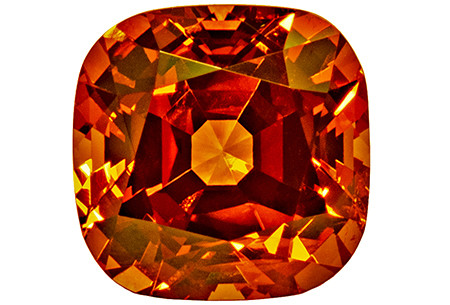

le grenat spésartite
Système cristalin : cubique
Indice de réfraction : 1,780 à 1,810
Densité : 4,12 à 4,18
Dureté : 7,5
Couleur : orange
Particularité : peut rétablir quart de tour au polariscope
Image :
